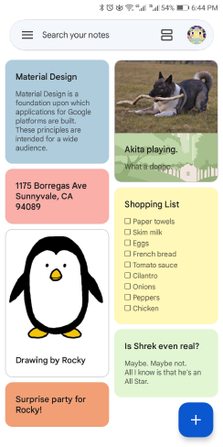

Google Keep
Source: https://en.wikipedia.org/wiki/Google_Keep
Category: company__depth2
Depth: 2
Summary
Google Keep is a note-taking service included as part of the free, web-based Google Docs Editors suite offered by Google. The service also includes: Google Docs, Google Sheets, Google Slides, Google Drawings, Google Forms and Google Sites. Google Keep is available as a web application as well as mobile app for Android and iOS. The app offers a variety of tools for taking notes, including texts, lists, images, and audio. Text from images can be extracted using optical character recognition and voice recordings can be transcribed. The interface allows for a single-column view or a multi-column view. Notes can be color-coded and labels can be applied to notes to categorize them. Later updates have added functionality to pin notes and to collaborate on notes with other Keep users in real-time.
Images

Full Article
Note-taking service developed by Google
Google Keep (formerly Google Notes and appears in app launcher as Keep Notes) is a note-taking service included as part of the free, web-based Google Docs Editors suite offered by Google. The service also includes: Google Docs, Google Sheets, Google Slides, Google Drawings, Google Forms and Google Sites. Google Keep is available as a web application as well as mobile app for Android and iOS. The app offers a variety of tools for taking notes, including texts, lists, images, and audio. Text from images can be extracted using optical character recognition and voice recordings can be transcribed. The interface allows for a single-column view or a multi-column view. Notes can be color-coded and labels can be applied to notes to categorize them. Later updates have added functionality to pin notes and to collaborate on notes with other Keep users in real-time.
Google Keep has received mixed reviews. A review just after its launch in 2013 praised its speed, the quality of voice notes, synchronization, and the widget that could be placed on the Android home screen. Reviews in 2016 have criticized the lack of formatting options, inability to undo changes, and an interface that only offers two view modes where neither was liked for their handling of long notes. However, Google Keep received praise for features including universal device access, native integration with other Google services, and the option to turn photos into text through optical character recognition.
Google ended support for the Google Keep Chrome app in February 2021, though Google Keep itself will continue to be accessible through other apps and directly in web browsers.
Features
Google Keep allows users to make different kinds of notes, including: texts, lists, images and audio. Users can set reminders, which are integrated with Google Now, to notify at a specified time. Notification when near a specified location was supported, but discontinued in late 2025.Text from images can be extracted using optical character recognition technology. Voice recordings created through Keep are automatically transcribed. Keep can convert text notes into checklists. Users can choose between a single-column view and a multi-column view. Notes can be color-coded, with options for: white, red, orange, yellow, green, teal, blue or gray. Users can press a "Copy to Google Doc" button that automatically copies all text into a new Google Docs document. Users can create notes and lists by voice. Notes can be categorized using labels, with a list of labels in the app's navigation bar.
Updates
In November 2014, Google introduced a real-time note cooperation feature between different Keep users, as well as a search feature determined by attributes, such as color, sharing status or the kind of content in the note. In October 2016, Google added the ability for users to pin notes. In February 2017, Google integrated Google Keep with Google Docs, providing access to notes while using Docs on the web. Google Assistant could previously maintain a shopping list within Google Keep. This feature was moved to Google Express in April 2017, resulting in a severe loss of functionality. In July 2017, Google updated Keep on Android with the ability for users to undo and redo changes.
Support for notification when near a specified location was discontinued in late 2025.
Platforms
Google Keep was launched on March 20, 2013 for the Android operating system and on the web. The Android app is compatible with Wear OS. Users can create new notes using voice input, add and check off items in lists and view reminders.
An app for the iOS operating system was released on September 24, 2015.
Reception
2013
In a May 2013 review, Alan Henry of Lifehacker wrote that the interface was "colorful and easy to use" and that the colors actually served a purpose in organization and contrast. Henry praised: the speed, quality of voice notes, synchronization, and Android home screen widget. He criticized the web interface, as well as the lack of an iOS app.
Time listed Google Keep among its 50 best Android applications for 2013.
2016
In a January 2016 review, JR Raphael of Computerworld wrote that "Keep is incredibly close to being an ideal tool for me to collect and manage all of my personal and work-related notes. And, as evidenced by the fact that I continue to use it, its positives outweigh its negatives for me and make it the best all-around option for my needs", praising what he calls Keep's "killer features", namely simplicity, "easy universal access" and native integration with other Google services. However, he characterized Keep's lack of formatting options, the inability to undo or revert changes and a missing search functionality within notes as "lingering weaknesses".
In a July 2016 review, Jill Duffy of PC Magazine wrote that the interface was best described as "simplicity" and criticized it for offering list and grid views that did not make finding information quick or easy. Adding that "Most of my notes are text-based recipes, which are quite long", Duffy said the list view was "even worse" than the grid view as it only showed "one note at a time and it's the most recently edited note." She wrote that the web interface was lacking in functionality present in the apps. The mobile app's offering to take a photo and run optical character recognition to have the scan turned into text was described as a "shining star", with the comment "It's an amazing feature, and it works very well". She also criticized the lack of formatting options and that sharing options are "possible but not very refined".
See also
References
External links
| - v - t - e Google | |
|---|---|
| a subsidiary of Alphabet | |
| Company | |
| Development | |
| Software | |
| Hardware | |
| - v - t - e Litigation | |
| Related | |
| Italics denote discontinued products. - Category - Outline |
| - v - t - e Note-taking/outliner software (comparison) | |
|---|---|
| - AllMyNotes Organizer - A.nnotate - Evernote - Gnote - Google Notebook/Keep - Joplin - Keynote - Logseq - MyInfo - Obsidian - Notes - Notion - OneNote - Personal Knowbase - Samsung Notes - TiddlyWiki - Tomboy - Windows Journal - Whizfolders |